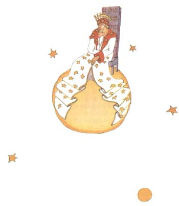
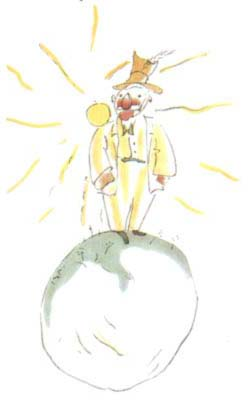
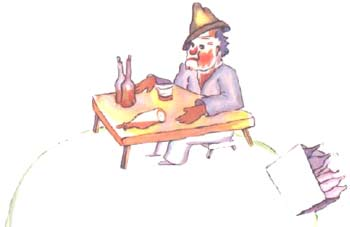

小王子目录
首页、1--3 章4--6 章
7--9 章
> 10-12章
13-15章
16-20章
21-23章
24-25章
26-27章
小王子作者
小王子解读与分析
小王子下载（PDF版）
小王子作者专题
小王子读后感集锦
《小王子》
[法] 圣埃克苏佩里
在附近的宇宙中，还有 325、326、327、328、329、330 等几颗小行星。他 就开始访问这几颗星球，想在那里找点事干，并且学习学习。
第一颗星球上住着一个国王。国王穿着用紫红色和白底黑花的毛皮做成的大 礼服，坐在一个很简单却又十分威严的宝座上。

当他看见小王子时，喊了起来：
“啊，来了一个臣民。”
小王子思量着：“他从来也没有见过我，怎么会认识我呢？”
他哪里知道，在那些国王的眼里，世界是非常简单的：所有的人都是臣民。
国王十分骄傲，因为他终于成了某个人的国王，他对小王子说道：“靠近些， 好让我好好看看你。”
小王子看看四周，想找个地方坐下来，可是整个星球被国王华丽的白底黑花 皮袍占满了。他只好站在那里，但是因为疲倦了，他打起哈欠来。
君王对他说：“在一个国王面前打哈欠是违反礼节的。我禁止你打哈欠。”
小王子羞愧地说道：“我实在忍不住，我长途跋涉来到这里，还没有睡觉呢。”
国王说：“那好吧，我命令你打哈欠。好些年来我没有看见过任何人打哈欠。 对我来说，打哈欠倒是新奇的事。来吧，再打个哈欠！这是命令。”
“这倒叫我有点紧张……我打不出哈欠来了……”小王子红着脸说。
“嗯！嗯！”国王回答道：“那么我……命令你忽而打哈欠，忽而……”
他嘟嘟囔囔，显出有点恼怒。
因为国王所要求的主要是保持他的威严受到尊敬。他不能容忍不听他的命令。 他是一位绝对的君主。可是，他却很善良，他下的命令都是有理智的。
他常常说：“如果我叫一位将军变成一只海鸟，而这位将军不服从我的命令， 那么这就不是将军的过错，而是我的过错。”
小王子腼腆地试探道：“我可以坐下吗？”
“我命令你坐下。”国王一边回答，一边庄重地把他那白底黑花皮袍大襟挪 动了一下。
可是小王子感到很奇怪。这么小的行星，国王他对什么进行统治呢？
他对国王说：“陛下……请原谅，我想问您……”
国王急忙抢着说道：“我命令你问我。”
“陛下……你统治什么呢？”
国王非常简单明了地说：“我统治一切。”
“一切？”
国王轻轻地用手指着他的行星和其他的行星，以及所有的星星。
小王子说：“统治这一切？”
“统治这一切。”
原来他不仅是一个绝对的君主，而且是整个宇宙的君主。
“那么，星星都服从您吗？”
“那当然！”国王对他说，“它们立即就得服从。我是不允许无纪律的。”
这样的权力使小王子惊叹不已。如果掌握了这样的权力，那么，他一天就不 只是看到四十三次日落，而可以看到七十二次，甚至一百次，或是二百次日落， 也不必要去挪动椅子了！由于他想起了他那被遗弃的小星球，心里有点难过，他 大胆地向国王提出了一个请求：
“我想看日落，请求您……命令太阳落山吧……”
国王说道：“如果我命令一个将军象一只蝴蝶那样从这朵花飞到那朵花，或 者命令他写作一个悲剧剧本或者变一只海鸟，而如果这位将军接到命令不执行的 话，那么，是他不对还是我不对呢？”
“那当然是您的不对。”小王子肯定地回答。
“一点也不错，”国王接着说，“向每个人提出的要求应该是他们所能做到 的。权威首先应该建立在理性的基础上。如果命令你的老百姓去投海，他们非起 来革命不可。我的命令是合理的，所以我有权要别人服从。”
“那么我提出的日落呢？”小王子一旦提出一个问题，他是不会忘记这个问 题的。
“日落么，你会看到的。我一定要太阳落山，不过按照我的统治科学，我得 等到条件成熟的时候。”
小王子问道：“这要等到什么时候呢？”
国王在回答之前，首先翻阅了一本厚厚的日历，嘴里慢慢说道：“嗯！嗯！ 日落大约……大约……在今晚七时四十分的时候！你将看到我的命令一定会被服从的。”
小王子又打起哈欠来了。他遗憾没有看到日落。他有点厌烦了，他对国王说： “我没有必要再呆在这儿了。我要走了。”
这位因为刚刚有了一个臣民而十分骄傲自得的国王说道：
“别走，别走。我任命你当大臣。”
“什么大臣”
“嗯……司法大臣！”
“可是，这儿没有一个要审判的人。”
“很难说呀，”国王说道。“我很老了，我这地方又小，没有放銮驾的地方， 另外，一走路我就累。因此我还没有巡视过我的王国呢！”
“噢！可是我已经看过了。”小王子说道，并探身朝星球的那一侧看了看。 那边也没有一个人……
“那么你就审判你自己呀！”国王回答他说。“这可是最难的了。审判自己 比审判别人要难得多啊！你要是能审判好自己，你就是一个真正有才智的人。”
“我吗，随便在什么地方我都可以审度自己。我没有必要留在这里。”
国王又说：“嗯……嗯……我想，在我的星球上有一只老耗子。夜里，我听见它 的声音。你可以审判它，不时地判处它死刑。因此它的生命取决于你的判决。可 是，你要有节制地使用这只耗子，每次判刑后都要赦免它，因为只有这一只耗子。”
“可是我不愿判死刑，我想我还是应该走。”小王子回答道。
“不行。”国王说。
但是小王子，准备完毕之后，不想使老君主难过，说道：
“如果国王陛下想要不折不扣地得到服从，你可以给我下一个合理的命令。 比如说，你可以命令我，一分钟之内必须离开。我认为这个条件是成熟的……”
国王什么也没有回答。起初，小王子有些犹疑不决，随后叹了口气，就离开 了……
“我派你当我的大使。”国王匆忙地喊道。
国王显出非常有权威的样子。
小王子在旅途中自言自语地说：“这些大人真奇怪。”
第二个行星上住着一个爱虚荣的人。
“喔唷！一个崇拜我的人来拜访了！”这个爱虚荣的人一见到小王子，老远 就叫喊起来。

在那些爱虚荣的人眼里，别人都成了他们的崇拜者。
“你好！”小王子说道。“你的帽子很奇怪。”
“这是为了向人致意用的。”爱虚荣的人回答道，“当人们向我欢呼的时候， 我就用帽子向他们致意。可惜，没有一个人经过这里。”
小王子不解其意。说道：“啊？是吗？”
爱虚荣的人向小王子建议道：“你用一只手去拍另一只手。”
小王子就拍起巴掌来。这位爱虚荣者就谦逊地举起帽子向小王子致意。
小王子心想：“这比访问那位国王有趣。”于是他又拍起巴掌来。爱虚荣者 又举起帽子来向他致意。
小王子这样做了五分钟，之后对这种单调的把戏有点厌倦了，说道：
“要想叫你的帽子掉下来，该怎么做呢？”
可这回爱虚荣者听不进他的话，因为凡是爱虚荣的人只听得进赞美的话。
他问小王子道：“你真的钦佩我吗？”
“钦佩是什么意思？”
“钦佩么，就是承认我是星球上最美的人，服饰最好的人，最富有的人，最 聪明的人。”
“可您是您的星球上唯一的人呀！”
“让我高兴吧，请你还是来钦佩我吧！”
小王子轻轻地耸了耸肩膀，说道：“我钦佩你，可是，这有什么能使你这样 感兴趣的？”
于是小王子就走开了。
小王子在路上自言自语地说了一句：“这些大人，肯定是十分古怪的。”
小王子所访问的下一个星球上住着一个酒鬼。访问时间非常短，可是它却使 小王子非常忧伤。

“你在干什么？”小王子问酒鬼，这个酒鬼默默地坐在那里，面前有一堆酒 瓶子，有的装着酒，有的是空的。
“我喝酒。”他阴沉忧郁地回答道。
“你为什么喝酒？”小王子问道。
“为了忘却。”酒鬼回答。
小王子已经有些可怜酒鬼。他问道：“忘却什么呢？”
酒鬼垂下脑袋坦白道：“为了忘却我的羞愧。”
“你羞愧什么呢？”小王子很想救助他。
“我羞愧我喝酒。”酒鬼说完以后就再也不开口了。
小王子迷惑不解地离开了。
在旅途中，他自言自语地说道：“这些大人确实真叫怪。”
1-3章4-6章7-9章10-12章13-15章16-20章21-23章24-25章26-27章